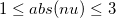

/math-79770b377be91d9a854cfd872b05ce15.png "e^{-x}K_{\upsilon /4}(x)") , where the order
, where the order /math-4fdefba26320686bb2bd0579a0df421c.png "\nu") = -3, -2, -1, 1, 2 or 3 and x is real and positive. For negative orders the formula
= -3, -2, -1, 1, 2 or 3 and x is real and positive. For negative orders the formula evaluates an approximation to the modified Bessel function of the second kind , where the order = -3, -2, -1, 1, 2 or 3 and x is real and positive. For negative orders the formula
is used.
For more information please review the s18edc function in the NAG document.
x>0.0.
of the function.
